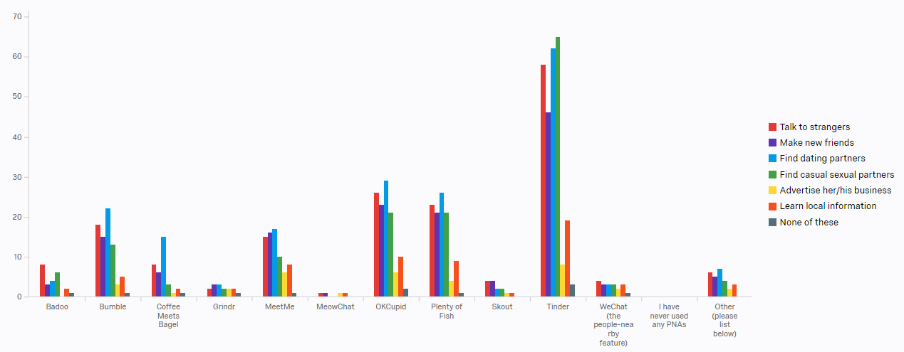
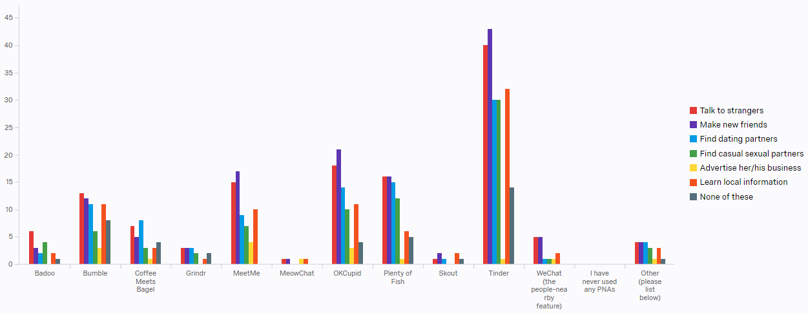

Since Fall 2016, I have been working with the Social Innovations Group (SIG) at the University of Michigan School of Information. SIG consists of an interdisciplinary team of individuals specializing in the research and development of ubiquitous and social computing technologies. Our vision is simple: To design, build and enhance innovative technologies to solve real-world problems. Our expertise lies in addressing real-world problems affecting marginalized groups and individuals based primarily in the U.S.
What are the possible benefits and challenges of People-Nearby Applications (PNAs) and other digital resources for newly-arrived immigrants?
PNAs are a type of social-matching system utilizing location information for people to meet other people nearby. Examples include Tinder, WeChat, MeetMe, and more.
I explore the different groups of immigrants that live in the United States and in the Ann Arbor area. Some immigrants do not speak English and just want to live a simple life. Others seek to learn English and are pursuing higher education in order to elevate their socioeconomic status and assimilate into American culture.
In addition, I assist in conducting interviews with immigrants as well as tutors and staff who volunteer at community organizations that help immigrants adapt to the unfamiliar setting. I also examine immigrant and volunteer behavior and experiences, analyze surveys using Qualtrics survey software, and code semi-structured interviews from those immigrants and volunteers.
Finally, I work to understand how digital tools such as social networking sites can suit those individuals' different needs. Many of those needs include expanding immigrants' social networks to gain local job and English learning opportunities, and ensuring proper communication between those immigrants and volunteers.
Some of the results are still in work in progress, and I will present my project at the undergraduate research symposium is April.
Figure 1 - What PNAs have you used or are currently using?

Figure 2 - In the following statements, please state the level of agreement you feel with the statement. "I feel I can do the following using Tinder:"

Figure 3 - Scenario - A Native of Your Current City - Imagine that you have an acquaintance who is a native of your current city and speaks the local language fluently. The person has a lot of friends in this area. Based on your perception of the applications, please check all activities you will suggest your acquaintance to do on each application.
Figure 4- Scenario - A Newcomer - Imagine that you have an acquaintance who is a newcomer to your current city and speaks the local language fluently. The person has few friends in this area. Based on your perception of the applications, please check all activities you will suggest your acquaintance to do on each application.

Figure 5- Scenario - A Newly Arrived Immigrant - Imagine that you have an acquaintance who is an immigrant who is new to your current city and does not speak the local language fluently. The person has few friends in this area. Based on your perception of the applications, please check all activities you will suggest your acquaintance to do on each application.
By far, the most popular PNA is Tinder, followed by OKCupid, Plenty of Fish, and Bumble.
Most of our respondents agree that PNAs are more suitable to talk to strangers, make new friends, find dating partners, and find casual sexual partners. Furthermore, they agree that PNAs are not generally as suitable for business advertising and learning local information as those previous reasons.
Nevertheless, a significant portion of our respondents conveyed that learning local information can be a successful method for people to learn local information.
I will also be presenting my research at the University of Michigan UROP Symposium in April. I will share details after I completed my presentation. Stay tuned.
 BACKGROUND
BACKGROUND PROCESS
PROCESS